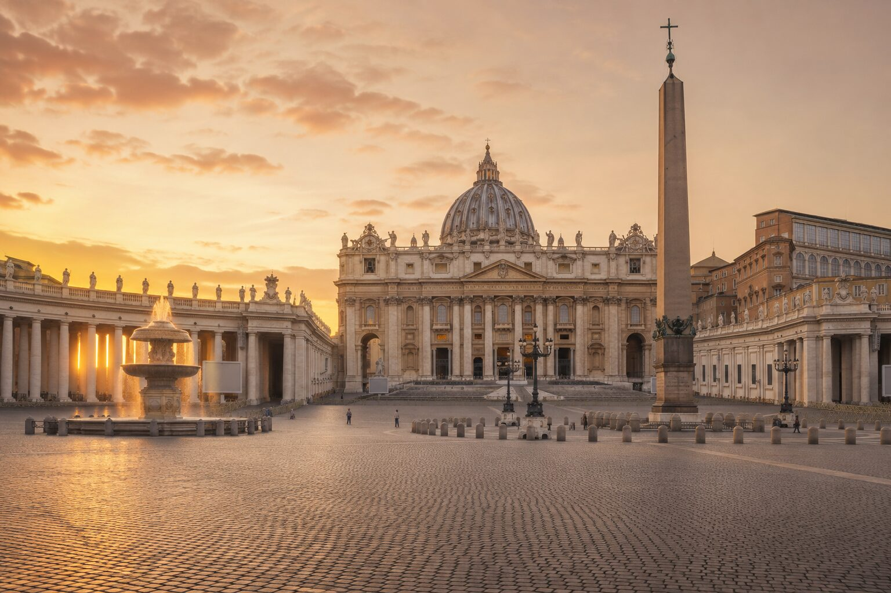
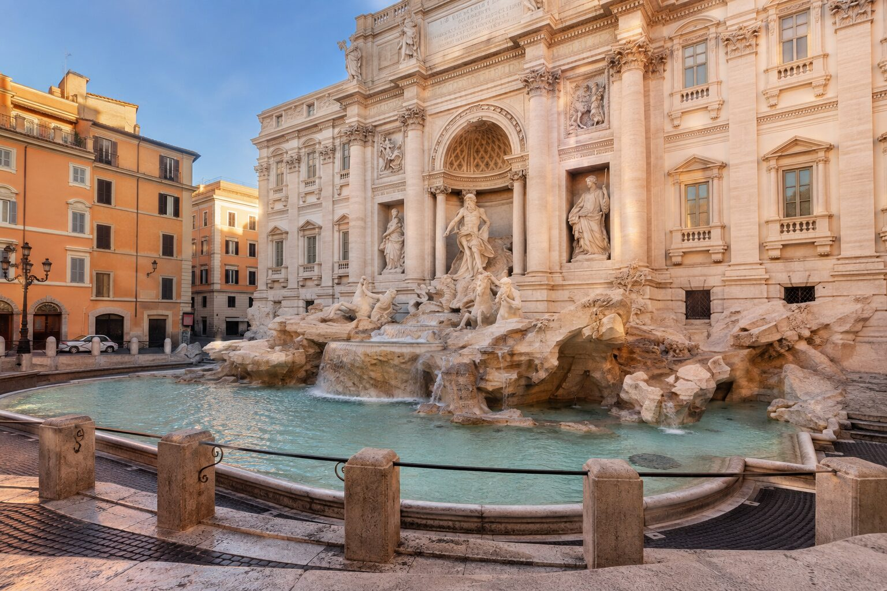
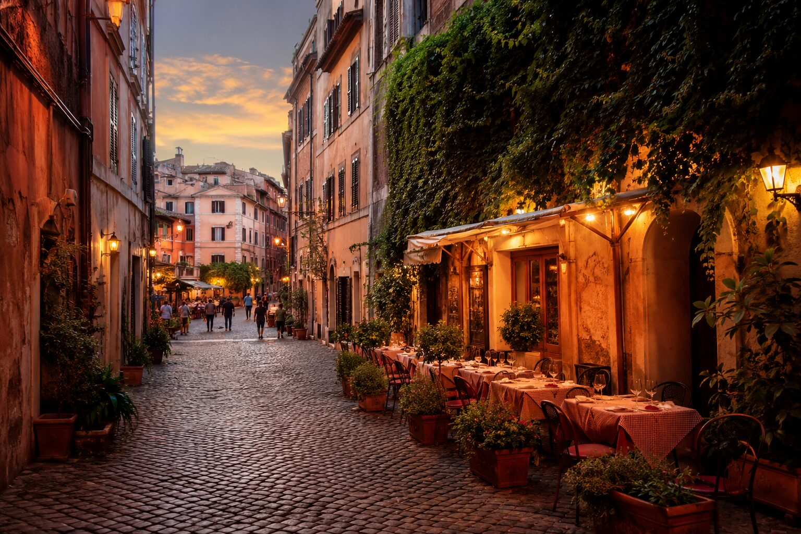
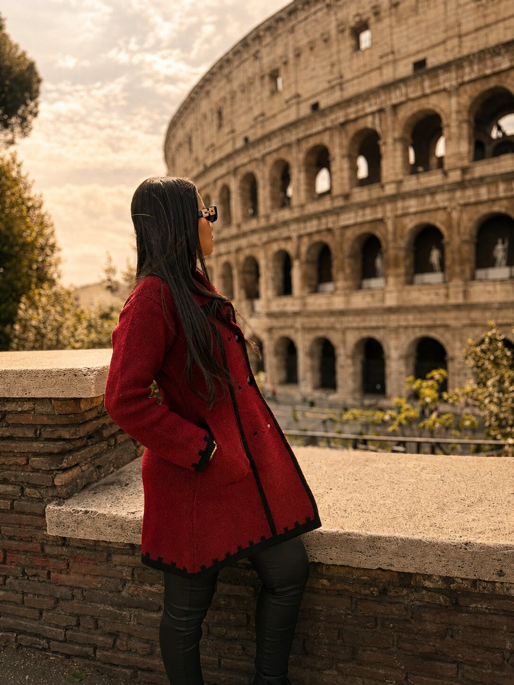
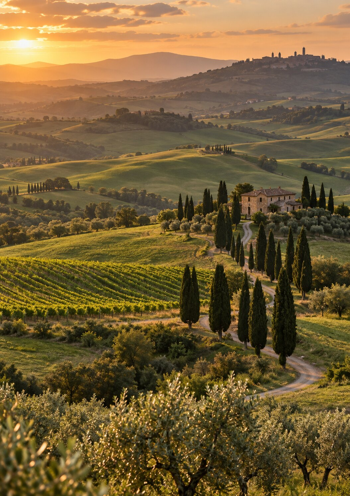

01
Roteiro por horário
Uma sequência realista para cada dia, com tempo para caminhar, comer e fotografar.
Comece por Roma ou leve o combo completo com mais 10 dias pela Itália Clássica. Horários, mapas e dicas práticas para viajar sem passar meses pesquisando.
Guias em PDF · abrem no celular · mapas clicáveis · opções a partir de R$ 17,99

É uma viagem organizada: manhã, tarde e noite, com a lógica por trás de cada escolha.
Uma sequência realista para cada dia, com tempo para caminhar, comer e fotografar.
Quatro rotas clicáveis no Google Maps para abrir no celular e salvar antes de sair.
Vaticano, Coliseu, Pantheon e Galleria Borghese com preços e canais oficiais.
Monti, Centro, Prati, Termini e Trastevere comparados de um jeito simples.
Aeroporto, Leonardo Express, metrô, bilhetes urbanos e quando vale poupar as pernas.
Faixas de gastos, checklist, golpes comuns e cuidados para viajar solo.



Trevi cedo, Pantheon no meio do dia e Trastevere no fim. Você aproveita a luz, reduz deslocamentos e termina onde a noite acontece.
Fique apenas com Roma ou leve o combo para continuar por quatro destinos clássicos da Itália.
Para quem vai conhecer a capital e quer os quatro dias organizados por regiões.

Para transformar Roma no começo de uma viagem de 14 dias pela Itália.


Enquanto o checkout da Kiwify é configurado, fale com a Rota da Mih pelo Instagram. Depois, a compra e a entrega digital dos PDFs serão automáticas pela Kiwify.
O roteiro de R$ 17,99 cobre quatro dias em Roma. O combo de R$ 37,99 inclui esse mesmo guia e mais o roteiro Itália Clássica em 10 dias, passando por Nápoles, Florença, Pisa e Veneza.
Sim. Ele cobre quatro dias inteiros em Roma. Em dias de chegada ou saída, use as sugestões como blocos e adapte conforme o horário do voo.
Não. O guia informa quais atrações exigem reserva, valores consultados e links oficiais, mas ingressos, hospedagem, alimentação e transporte são contratados separadamente.
Pode e deve, se o calendário de abertura ou a disponibilidade dos ingressos pedir. Preserve a ordem interna de cada rota para evitar deslocamentos desnecessários.
Sim. O material inclui orientações práticas de segurança e foi pensado para quem quer autonomia. Use sempre seu julgamento e considere as condições do dia.
Sim. Museus, transportes e atrações podem alterar horários, preços e regras. A edição atual foi verificada em 4 de setembro de 2026 e inclui links oficiais para a conferência final.
Receba o guia digital, reserve o que esgota e chegue sabendo qual região explorar em cada dia.
Comparar os roteiros